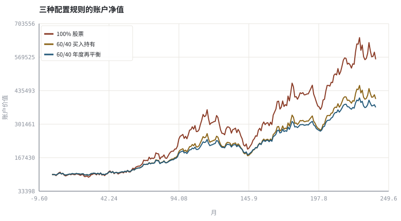
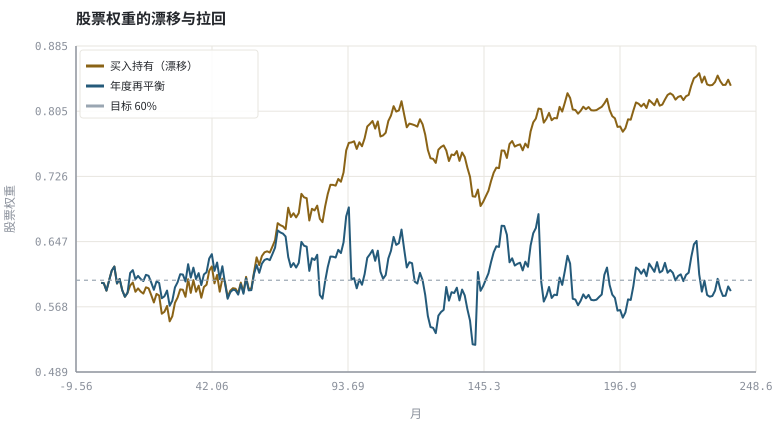

第 14 章资产配置、再平衡与定投
与其预测未来收益，不如先约定一条遇到任何行情都能执行的规则。
本章位置：第 13 章求「最优权重」，本章给出「稳健规则」；至此第二阶段结束，第 15 章 · 盘口、分时与逐笔：价格是怎样形成的 起转入屏幕上的价格形成过程。
配置策略是一个 controller：目标权重是 setpoint，实际权重是 process variable，再平衡是周期性的负反馈，成本是控制动作的代价。没有反馈的系统，暴露会随行情漂移。
- 能解释战略配置与战术配置的分工。
- 能模拟「买入持有」与「定期再平衡」的权重漂移与净值差异。
- 能计算再平衡换手与成本，理解「再平衡溢价」的成立条件。
- 能把生命周期、风险承受力与现金缓冲写进配置规则。
§知识点地图
每个知识点都配了 1～2 个扩展学习链接；本章完整资源清单见 扩展学习。
| # | 知识点 | 扩展学习 | 状态 |
|---|---|---|---|
| 1 | 战略与战术配置 | Asset allocation · Rebalancing investments | 正文已覆盖 |
| 2 | 目标权重与权重漂移 | Asset allocation · Rebalancing investments | 正文已覆盖 |
| 3 | 定期再平衡与阈值再平衡 | Rebalancing investments · Asset allocation | 正文已覆盖 |
| 4 | 再平衡换手与成本 | Rebalancing investments · Asset allocation | 正文已覆盖 |
| 5 | 定投与一次性投入 | Dollar cost averaging · Asset allocation | 正文已覆盖 |
| 6 | 生命周期与人力资本 | Lifecycle investing · Asset allocation | 正文已覆盖 |
| 7 | 风险承受力 | Modern portfolio theory · Value at risk | 正文已覆盖 |
| 8 | 现金缓冲 | Asset allocation · Rebalancing investments | 正文已覆盖 |
§14.1配置是一个策略，不是一次购买
第 13 章的最优组合依赖 μ 与 Σ 的估计，而这两个量在现实中极不稳定。实践中更稳健的做法是先固定一组目标权重（如股 60 / 债 40），再约定偏离到什么程度、多久把它拉回去。这样决策从「预测」变成状态机：
若 max_i |w_i,t − w_i*| > 阈值 → 卖出超配、买入低配 → w = w*
定期再平衡与阈值再平衡的区别，等同于定时任务与事件触发：前者成本可预期，后者响应更快但交易次数不确定。
§14.2再平衡为什么会改善风险调整收益
两类资产负相关或低相关、且都均值回复时，再平衡会系统性地「高抛低吸」，带来所谓再平衡溢价。但在单边趋势市里，它会不断卖出赢家、买入输家，跑输买入持有；而权重漂移会让组合的实际风险暴露悄悄偏离目标。所以正确的比较不是「谁收益高」，而是谁的暴露更接近你声明的风险预算。
§14.3生命周期：把人力资本算进资产负债表
| 阶段 | 人力资本 | 合理风险暴露 | 重点 |
|---|---|---|---|
| 在校 / 初入职场 | 高（未来收入现值大） | 可偏高 | 积累本金、建立应急金与纪律 |
| 家庭形成期 | 中高 | 中高 | 负债、保险、流动性需求上升 |
| 临近退休 | 低 | 下降 | 回撤承受力下降、提取顺序风险 |
| 退休后 | 接近 0 | 低 | 现金流匹配、提取率与费用 |
定投（DCA）本质上不是提高收益的技巧，而是把择时风险摊到时间上、把储蓄纪律自动化。在长期上行市场里一次性投入的期望终值通常更高，但定投的回撤体验与行为可持续性是它的真实价值（回顾第 00 章实验）。
§Python 分析实例
实验 14-1 · 买入持有 vs 年度再平衡
#!/usr/bin/env python3
# -*- coding: utf-8 -*-
"""合成 20 年月度股债收益，比较三种规则的风险、收益、回撤与权重漂移。
数据为合成数据或模型示意，仅用于教学，不构成投资建议。
"""
from __future__ import annotations
import math
import pathlib
import random
import statistics
import sys
sys.path.insert(0, str(pathlib.Path(__file__).resolve().parents[3] / "tools"))
from chart import Chart, candlestick, heatmap, BLUE, RED, GREEN, AMBER
FIG = pathlib.Path(__file__).resolve().parents[1] / "fig"
FIG.mkdir(exist_ok=True)
random.seed(7)
# ---- 参数区 ----
YEARS = 20
MONTHS = YEARS * 12
TARGET = (0.60, 0.40) # 股 / 债目标权重
REBAL_EVERY = 12 # 每 12 个月再平衡
V0 = 100000.0
COST = 0.001 # 单次调仓成本率
# ---- 计算与作图 ----
rng = random.Random(7)
rs, rb = [], []
for _ in range(MONTHS):
z, z2 = rng.gauss(0, 1), rng.gauss(0, 1)
rs.append(0.007 + 0.045 * z)
rb.append(0.002 + 0.012 * (-0.2 * z + math.sqrt(1 - 0.04) * z2))
all_stock = [V0]
bh_series, rb_series = [V0], [V0]
bh_s, bh_b = V0 * TARGET[0], V0 * TARGET[1] # 买入持有：份额固定
rb_s, rb_b = V0 * TARGET[0], V0 * TARGET[1] # 再平衡：份额可调
turnover, w_bh, w_rb = 0.0, [], []
for i in range(MONTHS):
all_stock.append(all_stock[-1] * (1 + rs[i]))
bh_s *= (1 + rs[i]); bh_b *= (1 + rb[i])
bh_value = bh_s + bh_b
bh_series.append(bh_value)
w_bh.append(bh_s / bh_value)
if (i + 1) % REBAL_EVERY == 0:
rb_value = rb_s + rb_b
trade = abs(TARGET[0] - rb_s / rb_value) * rb_value
turnover += trade
rb_value -= trade * COST
rb_s, rb_b = rb_value * TARGET[0], rb_value * TARGET[1]
rb_s *= (1 + rs[i]); rb_b *= (1 + rb[i])
rb_value = rb_s + rb_b
rb_series.append(rb_value)
w_rb.append(rb_s / rb_value)
def metrics(xs):
rr = [xs[i] / xs[i - 1] - 1 for i in range(1, len(xs))]
peak, mdd = xs[0], 0.0
for v in xs:
peak = max(peak, v)
mdd = min(mdd, v / peak - 1)
cagr = (xs[-1] / xs[0]) ** (1 / YEARS) - 1
return cagr, statistics.pstdev(rr) * math.sqrt(12), mdd
c = Chart(FIG / "14-equity.svg", "三种配置规则的账户净值", xlabel="月", ylabel="账户价值")
c.line(range(MONTHS + 1), all_stock, RED, label="100% 股票")
c.line(range(MONTHS + 1), bh_series, AMBER, label="60/40 买入持有")
c.line(range(MONTHS + 1), rb_series, BLUE, label="60/40 年度再平衡")
print("净值图:", c.save())
w = Chart(FIG / "14-weights.svg", "股票权重的漂移与拉回", xlabel="月", ylabel="股票权重")
w.line(range(MONTHS), w_bh, AMBER, label="买入持有（漂移）")
w.line(range(MONTHS), w_rb, BLUE, label="年度再平衡")
w.hline(TARGET[0], "#9aa6b2", label="目标 60%")
print("权重图:", w.save())
m1, m2, m3 = metrics(all_stock), metrics(bh_series), metrics(rb_series)
print("再平衡累计调仓金额=%.0f 元 | 期末权重 买入持有=%.1f%% 再平衡=%.1f%%" %
(turnover, 100 * w_bh[-1], 100 * w_rb[-1]))
print("全股 CAGR=%.2f%% σ=%.2f%% MDD=%.1f%% | 买入持有 %.2f%% / %.2f%% / %.1f%% | 再平衡 %.2f%% / %.2f%% / %.1f%%" %
(100 * m1[0], 100 * m1[1], 100 * m1[2], 100 * m2[0], 100 * m2[1], 100 * m2[2],
100 * m3[0], 100 * m3[1], 100 * m3[2]))操作：把 REBAL_EVERY 改成 1（每月）与 120（几乎不调），比较波动、回撤与累计调仓金额。 预期与判读：再平衡把权重拉回目标，牺牲一部分趋势收益换取风险暴露可控；买入持有的股票权重会随行情漂移，组合悄悄变得更激进。
改参数看趋势：把股票月收益均值从 0.007 改为负数，观察再平衡在长期下跌市里的表现。 文件位置：part2/14-allocation/code/14-allocation.py


代码块右上角可一键复制；仓库里的 code/*.py 由 tools/extract_code.py 从这些代码块自动抽取。脚本只用标准库、固定 random.seed(7)，运行后写出 fig/*.svg；批量运行用 ./tools/run_python.sh。
§本章参考资料
按本章知识点挑选的精读资料；更多检索入口见 扩展学习。
Asset allocation
百科 · 参考资料战略/战术配置与长期风险预算
怎么用：战略/战术配置的框架https://en.wikipedia.org/wiki/Asset_allocation
Rebalancing investments
百科 · 参考资料定期回归目标权重与再平衡溢价
怎么用：再平衡规则与再平衡溢价https://en.wikipedia.org/wiki/Rebalancing_investments
Dollar cost averaging
百科 · 参考资料定投与一次性投入的现金流差异
怎么用：定投与一次性投入的现金流差异https://en.wikipedia.org/wiki/Dollar_cost_averaging
Lifecycle investing
百科 · 参考资料人力资本与年龄下的风险承受力
怎么用：生命周期与人力资本视角https://en.wikipedia.org/wiki/Lifecycle_investing
§常见误区
- 把再平衡当作提高收益的技巧，忽略它在单边市中的劣势。
- 只看收益比较，不看权重漂移造成的风险暴露变化。
- 再平衡频率过高导致成本吞掉溢价。
- 把生命周期规则写成固定年龄数字，忽略负债与收入稳定性。
§习题与思考
- 实现阈值再平衡（偏离 5 个百分点才触发），与年度再平衡比较交易次数。
- 解释为什么「定投更适合波动大的市场」不等于「定投期望收益更高」。
- 在自己的 IPS 里写出目标权重、阈值、频率与暂停条件。
§扩展学习
以下资料按本章知识点挑选，可直接精读或对照真实数据；知识点地图里每一条也挂了 1～2 个直达链接。
- Asset allocation（百科）：战略/战术配置与长期风险预算
Asset allocation - Rebalancing investments（百科）：定期回归目标权重与再平衡溢价
Rebalancing investments - Dollar cost averaging（百科）：定投与一次性投入的现金流差异
Dollar cost averaging - Risk parity（百科）：按风险贡献而非资金额分配
Risk parity - Bogleheads Wiki（课程）：长期指数投资、再平衡与税费的实践型百科
Bogleheads Wiki
继续扩展：在 Google Scholar 检索本章相关论文 · 在 MIT OCW 检索配套课程 · 在 arXiv 检索预印本 · 全书参考资源总表 · 附录 A 速查与链接总表
§延伸阅读与内链
- 第 27 章 · 绩效度量与归因：夏普、回撤与 Brinson 绩效归因；第 31 章 · 投资政策说明书与长期复盘 把配置规则写进投资政策说明书。